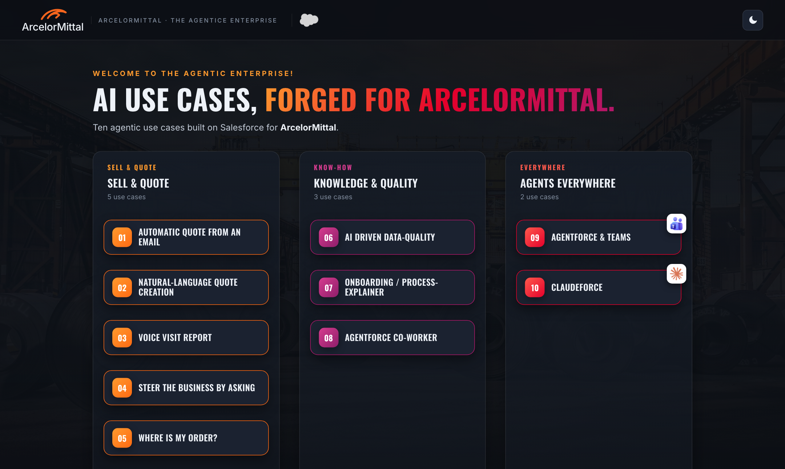
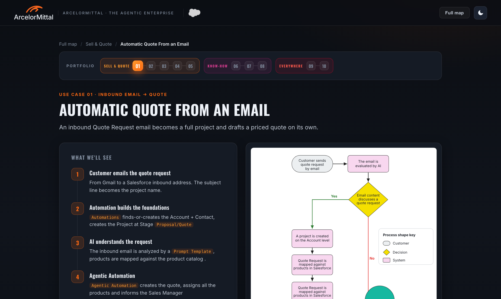
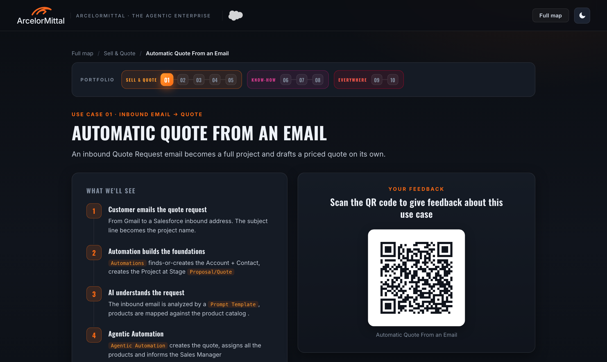
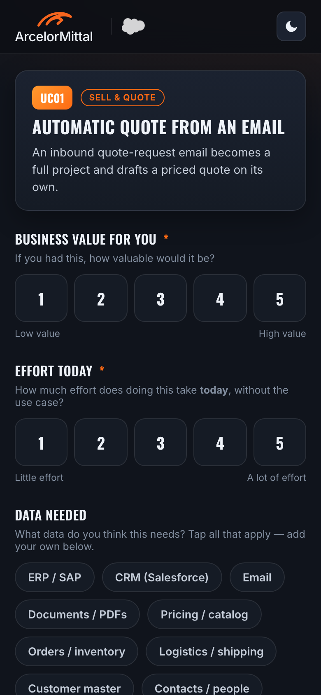
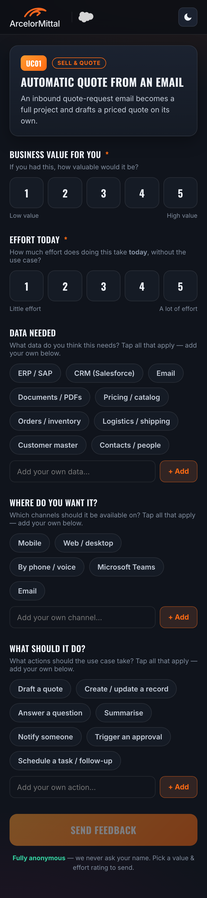
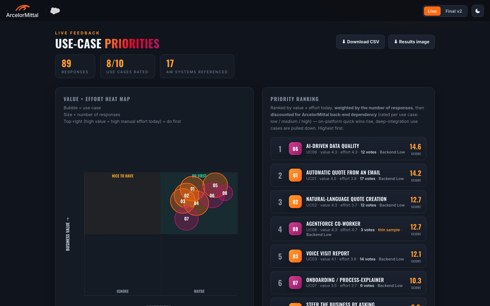
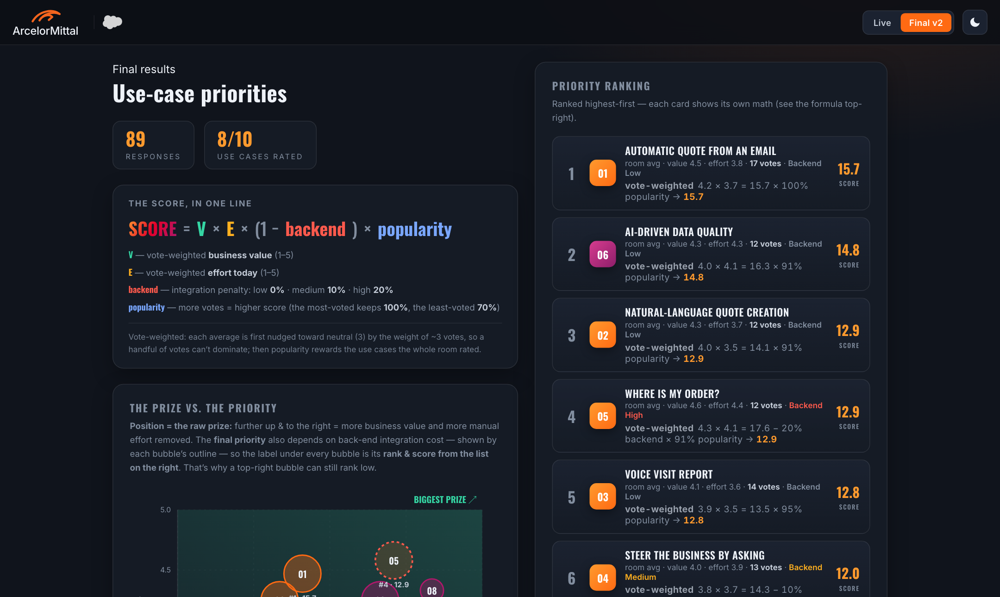
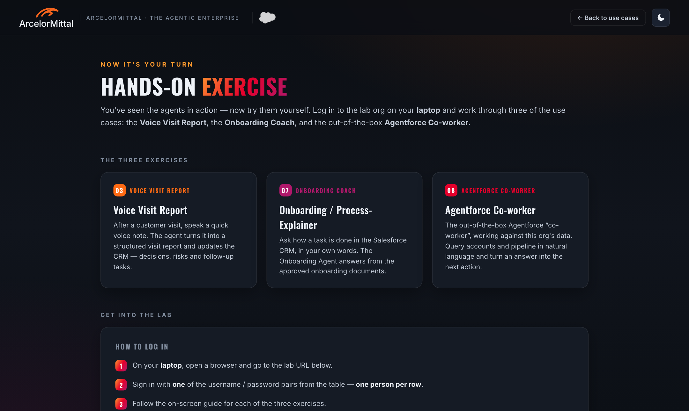

During the ArcelorMittal Long SIC session, after every use-case demo the audience scans a QR code and rates what they just saw on their phone. Votes come in live and turn into a Value × Effort heat map and a ranked priority list, so the session ends with a backlog the customer helped build.
Three surfaces: the presenter screen we drive with the arrow keys, the attendee's phone, and the results screen on the projector.
Open it from the metro map of all 10 use cases.
The page shows the story steps and a screenshot.
The screenshot is swapped for that use case's QR code.
Value, effort today, data, channels, actions. Anonymous.
Live heat map + priority list, plus a final scored view.
Click any screenshot to see it full size.
The session starts on a metro-style map of the 10 AI use cases, grouped into three themes: Sell & Quote (orange), Knowledge & Quality (magenta) and Agents Everywhere (red).
Clicking a station opens that use case. After that the presenter only needs the ← / → keys.

Each use case has a page with the "What we'll see" steps on the left and a screenshot or diagram on the right. The portfolio rail at the top shows where we are in the session.
This is the backdrop while we demo the real thing in the Salesforce org.

When the demo is done, the presenter presses →. The screenshot is replaced by a "Scan the QR code" panel for that specific use case.
feedback.html?uc=UC01 … UC10, so votes always land on the right use case. The images are img/qr-01.png … qr-10.png.
The QR opens a mobile form already set to that use case. Two required taps and three optional chip groups:


Every vote shows up on the results screen within a second. Two panels:
Below these, two more panels show which ArcelorMittal systems each use case depends on (from the "data needed" answers). That gives an early view of integration effort.
Exports: CSV (summary + raw votes) and a PNG of the results for the follow-up deck.

A Live ⇄ Final v2 switch in the top bar moves to the wrap-up view. Here the ranking also accounts for delivery reality (back-end integration cost and how many people voted), and every card shows its own calculation so the room can follow it.
The chart now reads as "the prize vs. the priority". A bubble's position is the raw prize, its outline shows back-end dependency, and its label shows its final rank. This explains why a top-right bubble such as Where Is My Order? can still rank #4.

On the last use case, a final → after the QR moves the presenter screen to the hands-on exercise page. It has the lab URL, the logins and three short exercises, so the session goes from "rate it" to "try it" without leaving the presenter flow.

The idea is simple: high business value + lots of manual effort today = biggest payoff. The final score adds a few corrections so the result holds up with real-world vote counts.
Business value on the vertical axis, effort today on the horizontal. Effort here means effort removed, so to the right is better.
Average 1–5 rating, nudged toward neutral (3) by the weight of ~3 votes. Three enthusiastic votes can't beat fifteen solid ones.
Same vote-weighting. Measures the manual pain the use case takes away.
Set per use case by us: low 0% · medium 10% · high 20%. A small nudge, not a veto: deep-integration ideas still rank if the room wants them.
More votes = more interest. The most-voted use case keeps 100%, the least-voted 70%, scaled in between.
Plain HTML + JavaScript: no framework, no build step, no app to install. Hosted for free on GitHub Pages with a free Firebase database for live sync.
| Piece | What it does |
|---|---|
SIC-usecases-site/index.html | Presenter map + use-case pages; → toggles the QR panel |
SIC-usecases-site/img/qr-XX.png | One QR image per use case |
sic-feedback/feedback.html | Mobile voting form, use case chosen via ?uc= |
sic-feedback/results.html | Live heat map, ranking, system dependencies, CSV/PNG export |
sic-feedback/results-v2.html | Final scored view (snapshot of the session) |
sic-feedback/js/usecases.js | The 10 use cases, their back-end dependency level, the chip options |
sic-feedback/js/db.js | Firebase wrapper; falls back to the browser's local storage for offline review |